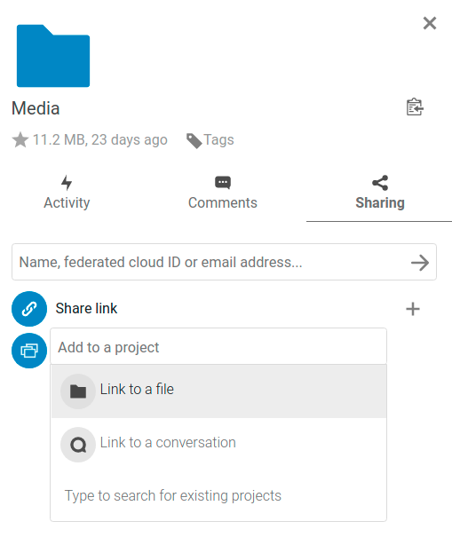
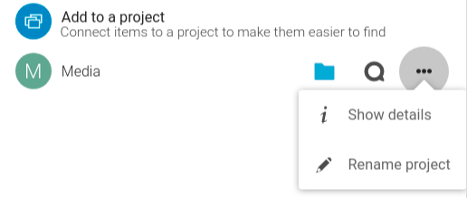

Projecten
Verouderd sinds versie 25: This feature was replaced by the shipped related resources app.
Gebruikers kunnen bestanden, chats en andere items met elkaar associëren in projecten. De verschillende apps presenteren deze items in een lijst, zodat gebruikers er direct naartoe kunnen springen. Projecten zijn Nextcloud breed. Wanneer een gebruiker een bestand deelt dat deel uitmaakt van een project, kan de deelontvanger dat project ook zien. Een klik op een van de items in een project leidt direct naar het project, of het nu gaat om een chat, een bestand of een taak.
Creëer een nieuw project
Een nieuw project kan worden gecreëerd door twee items aan elkaar te koppelen. Begin met het openen van een bestand of mappen die de zijbalk delen.

Klik op Toevoegen aan een project en selecteer het type item dat je wil koppelen aan het huidige bestand/de huidige map. Er wordt een selector geopend waarmee je bijvoorbeeld een Talk gesprek kunt selecteren.

Zodra het item is geselecteerd, wordt er een nieuw project aangemaakt en in het tabblad Delen van de zijbalk vermeld. Hetzelfde project zal ook verschijnen in de Delen zijbalk van de gelinkte items.

De lijstvermelding toont snelkoppelingen naar een beperkt aantal items. Door het contextmenu te openen kan het project worden hernoemd en kan de volledige lijst met items worden uitgebreid.
Meer items toevoegen aan een project
Indien een ander item moet worden toegevoegd aan een reeds bestaand project kan dit worden gedaan door te zoeken naar de projectnaam in de Toevoegen aan een project picker.

Zichtbaarheid van projecten
Projecten hebben geen invloed op de toegang en de zichtbaarheid van de verschillende items. Gebruikers zullen alleen projecten van andere gebruikers zien als ze toegang hebben tot alle items.